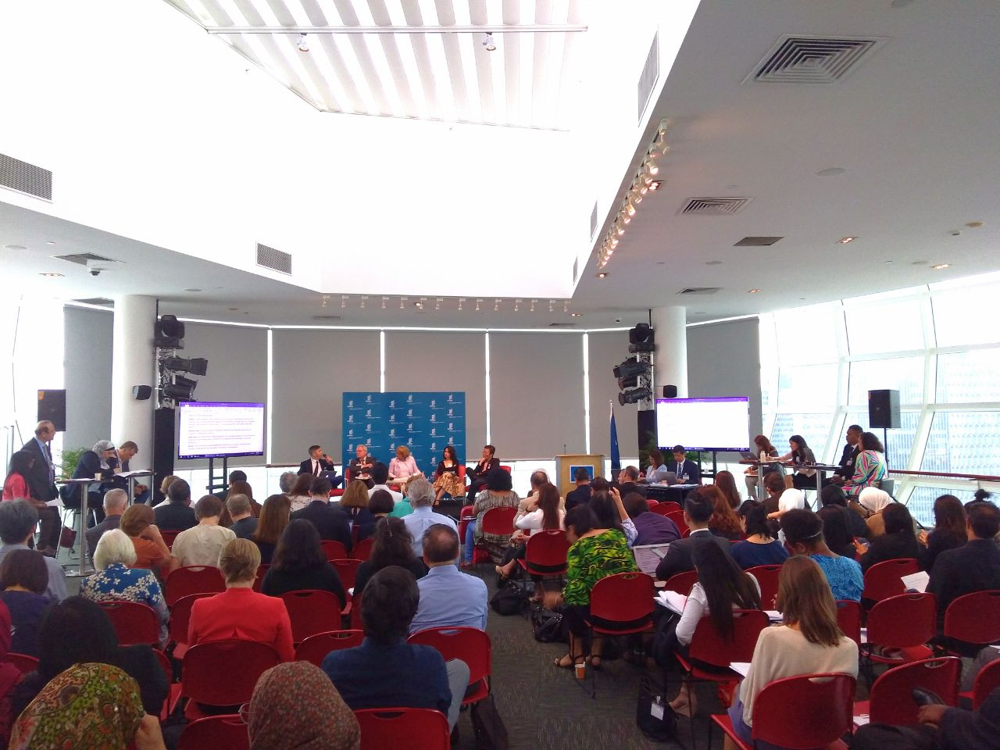

-
 Acara
Perwakilan Creative Commons Indonesia sebagai Peninjau dalam Agenda WIPO mengenai Pembatasan dan Pengecualian Hak Cipta untuk Perpustakaan, Arsip, Museum, dan Aktivitas Pendidikan dan Riset di Singapura
Harsa Wahyu Ramadhan 3 May 2019Pembatasan dan pengecualian (P&P) hak cipta untuk perpustakaan, arsip, museum, dan aktivitas pendidikan dan riset telah menjadi agenda World Intellectual...
-
 Acara
Acara
Lokakarya Hak Cipta dan Lisensi Creative Commons untuk Jurnal Ilmiah di Universitas Muhammadiyah Sumatera Utara
2 May 2019Senin, tanggal 29 April 2019, Creative Commons Indonesia (CCID) dan Lembaga Penelitian dan Pengabdian kepada Masyarakat (LP2M) Universitas Muhammadiyah Sumatera...
-
 Acara
Acara
Dokumentasi Kenali Hakmu Bagikan Karyamu
1 May 2019Pada tanggal 10 April 2019 lalu Creative Commons Indonesia (CC Indonesia) dan Badan Ekonomi Kreatif Republik Indonesia (BEKRAF RI) menyelenggarakan...
-
 Acara
Acara
Sosialisasi Lisensi Creative Commons di Wikinusantara
30 Apr 2019Foto oleh Fitriayu/CC BY Pada hari Sabtu (27/4/2018) lalu, CCID diwakili Hilman Fathoni memberikan paparan dasar tentang lisensi Creative Commons...
-
 Acara
Acara
Para Pelaku Kreatif, Ayo Kenali Hakmu dan Bagikan Karyamu!
28 Mar 2019Sebagai pelaku kreatif di ranah digital, apakah kalian pernah berpikir, “Kalau saya membagikan karya saya secara gratis di Internet, apakah...
-
 Acara
Acara
Creative Commons Indonesia Kembali Dikukuhkan Sebagai Perwakilan Resmi CC di Indonesia
27 Mar 2019Foto oleh Susi Harja Hunusalela Pada tanggal 26 Januari 2019 lalu, Proyek Creative Commons Indonesia menyelenggarakan diskusi terbuka sebagai upaya...
-
 Acara
Acara
Sosialisasi Lisensi Creative Commons Untuk Komunitas SLiMS
4 Mar 2019Foto oleh SLiMS Jakarta Pada hari Sabtu (3/3/2018) lalu, CCID diwakili Hilman Fathoni memberikan paparan dasar tentang lisensi Creative Commons...
-
 Acara
Acara
Diskusi Terbuka Creative Commons Indonesia
24 Jan 2019Pendahuluan Creative Commons (CC) adalah organisasi nirlaba yang berpusat di Mountain View, Canada, dengan jaringan afiliasi yang tersebar di berbagai...
-
 Berita
Berita
Lokakarya Hak Cipta dan Lisensi Creative Commons di Pekanbaru
22 Jan 2019Minggu (13/01/2019), Creative Commons Indonesia (CCID) bekerja sama dengan komunitas literasi Hidden Gems dan Balai Pustaka Universitas Riau dalam penyelengaraan...
Acara
 Oleh Creative Commons Indonesia 28 May 2019
Oleh Creative Commons Indonesia 28 May 2019
Laporan Konferensi Tingkat Tinggi Dunia Creative Commons 2019 di Lisbon, Portugal
Tahun ini, Creative Commons (CC) menyelenggarakan kembali CC Global Summit selama 3 hari (9-11 Mei 2019) di Lisbon, Portugal. Konferensi tahunan ini kembali mengundang peserta dari berbagai latar belakang dan kenegaraan mulai dari aktivis, pengacara...

Apa yang kita lakukan
Creative Commons Indonesia advocates for the free and open sharing of knowledge and creativity.
Tentang kamiLisensi Creative Commons
Creative Commons licenses empower the sharing of works with standardised copyright permissions and attribution.
Belajarlah lagiKajian
Resources to learn about copyright, licensing, and making use of only licensed works.
Mulai belajar